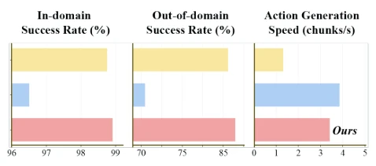
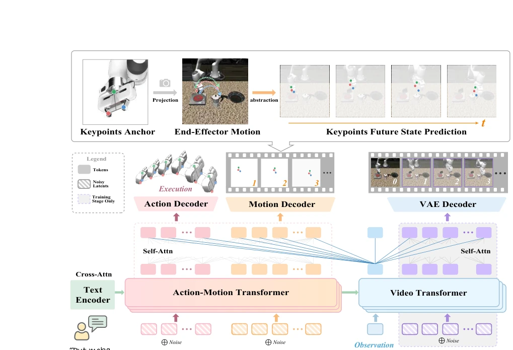
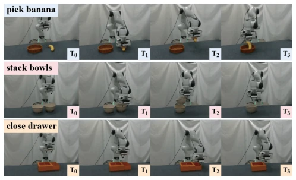
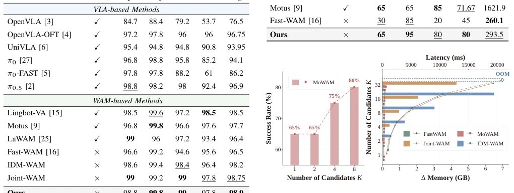

This paper performs a "de-pixelation" surgery on WAM, attempting to replace the entire video stream with several key points. Existing WAMs either generate future videos like Joint-WAM [10], resulting in exploding computational costs and terrifyingly high latency; or like Fast-WAM [16] directly discard the video, causing a collapse in out-of-distribution (OOD) robustness. MoWAM sits in between, implementing "motion prediction" to replace "video generation". Simply put, robots do not need to know how background textures change when working, they only need to know how the robotic arm hand moves. This approach indeed saves VRAM and latency, and can perform "multi-candidate sampling" during inference, somewhat like exchanging less computational power for more "trial-and-error" opportunities. However, replacing the entire video with several key points, will it lose too much fine-grained information of environmental interaction? Such as micro-deformations during grasping? The experimental data looks quite appealing, but under complex physical interactions, will this abstraction fail? In short, it is a clever engineering trade-off, but the theoretical upper limit is debatable.
The core pain point lies in the contradiction between computational overhead during WAM inference and explicit future information. Existing WAMs such as Motus [9] or DreamZero [10] rely on generating future videos to encode dynamics, which leads to high inference latency and generates a large amount of unnecessary background texture information. Although Fast-WAM [16] removes video generation during inference and relies only on implicit features, performance drops significantly in out-of-distribution (OOD) scenarios, indicating that implicit encoding lacks explicit dynamic estimation for the current scene. MoWAM attempts to answer: Can the benefits of explicit future prediction be retained without generating a complete video? This solves the balance problem between real-time performance and robustness when deploying WAM, especially when multi-candidate inference is required, where explicit motion is easier to verify and scale than explicit video. Existing methods often choose between efficiency and performance, while MoWAM provides a compromise solution; through structured motion abstraction, it retains explicit information of future interactions while avoiding the huge overhead of video generation, providing a new idea for real-time deployment of WAM.

Fig. 1. Comparison of Joint-WAM, Fast-WAM, and MoWAM, shown in yellow, blue, and red, respectively. In-domain and out-of-domain denote average success rates on LIBERO and LIBERO-Plus. Speed denotes the number of action chunks generated per second based on measured latency.
The overall architecture adopts a dual-branch Transformer. During the training phase, the Video Transformer learns future video dynamics, and the Action-Motion Transformer jointly predicts actions and structured motion. During the inference phase, the Video Transformer is only used to extract observation features, and the Action-Motion Transformer directly generates action blocks and motion blocks, without needing to generate video frames. Motion representation is defined as structured keypoint changes of the end-effector, including dynamic components (center displacement, fingertip span change) and structural components (fingertip span, palm offset), totaling a 10-dimensional vector. This representation discards background textures and retains key geometric information relevant to control. Additionally, the paper introduces a motion-based Inference-Time Scaling strategy: sampling multiple action-motion candidate pairs, scoring them through a motion-aware task progress Verifier, and selecting the highest score for execution. The Verifier is trained using pairwise ranking loss, utilizing successful demonstrations and perturbed negative samples. This allows the model to explore multiple explicit futures under a limited budget, using motion as a structured signal to compare the consequences of different actions. Motion modeling uses Flow Matching to handle conditional distributions, and the Action-Motion Transformer accesses observation representations directly through an attention mechanism, ensuring action generation utilizes dynamic priors learned during training. During training, the Video Transformer and Action-Motion Transformer work in parallel; the former is responsible for video denoising, the latter for action and motion denoising, and both share observation features. During inference, the Video Transformer runs only once to extract KV pairs, while the Action-Motion Transformer performs multiple denoising samplings to generate candidate pairs. The Verifier scores based on geometric consistency of motion trajectories, rather than pixel-level similarity, which greatly reduces verification costs.

Fig. 2. Framework of MoWAM. The Video Transformer learns future dynamics during training, while the Action-Motion Transformer predicts action and motion without future video generation at inference. Structured end-effector motion provides a compact abstraction of the future, replacing dense future visual rollout at inference.
Evaluated on LIBERO, LIBERO-Plus, and real Franka robot tasks. The main metrics are task success rate and action latency. MoWAM achieves a 98.9% success rate on LIBERO, comparable to Joint-WAM but with lower latency (293.5ms vs 766.3ms). On OOD LIBERO-Plus, MoWAM's average success rate is 81.43%, significantly better than Fast-WAM (70.43%), approaching Joint-WAM. In real tasks, the average success rate is 80%, better than Fast-WAM and latency is far lower than Motus. Ablation studies show that motion supervision (dynamic + structural) is crucial for performance, and video modeling during training cannot be omitted. Increasing the number of candidates (K) during inference can continuously improve success rate, and memory/latency growth is far lower than the video generation baseline, verifying the advantage of motion representation in scalability. In real scenarios, MoWAM demonstrates stronger generalization ability, especially when objects are occluded or lighting changes, where motion prediction is more stable than video generation. Compared with Fast-WAM, MoWAM significantly improves the success rate of complex tasks while maintaining low latency, proving the effectiveness of explicit motion prediction in embodied intelligence.

Fig. 3. Three real-world tasks on a Franka Research 3 robot: Pick Banana, Stack Bowls, and Close Drawer

Fig. 4. Left: increasing the number of candidates improves task success rate. Right: latency and memory consumption scale with the number of candidates for different WAM variants.